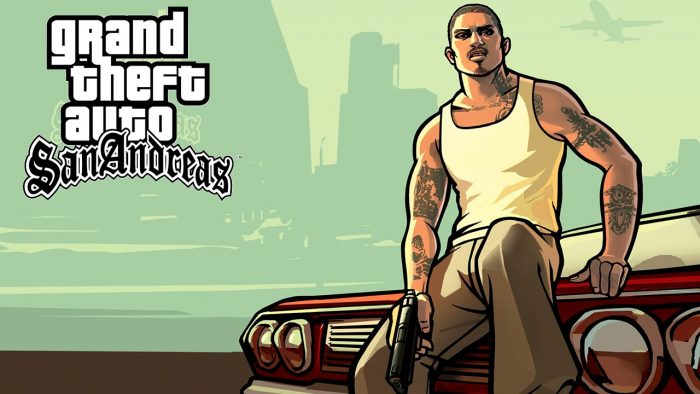

Grand Theft Auto: San Andreas
Há 5 anos, Carl Johnson fugiu das pressões da vida em Los Santos, San Andreas... uma cidade que se destruía com gangues, drogas e corrupção, onde estrelas de cinema e milionários fazem o melhor que podem para evitar traficantes e bandidos. É o começo dos anos 90 Carl volta para casa. A sua mãe foi assassinada, a sua família ruiu e seus amigos de infância estão todos indo em direção ao desastre. Para piorar tudo, dois policiais corruptos armaram para que ele fosse acusado de homicídio. CJ é forçado a embarcar numa jornada que o levará por todo o estado de San Andreas para salvar sua família e assumir o controle das ruas.